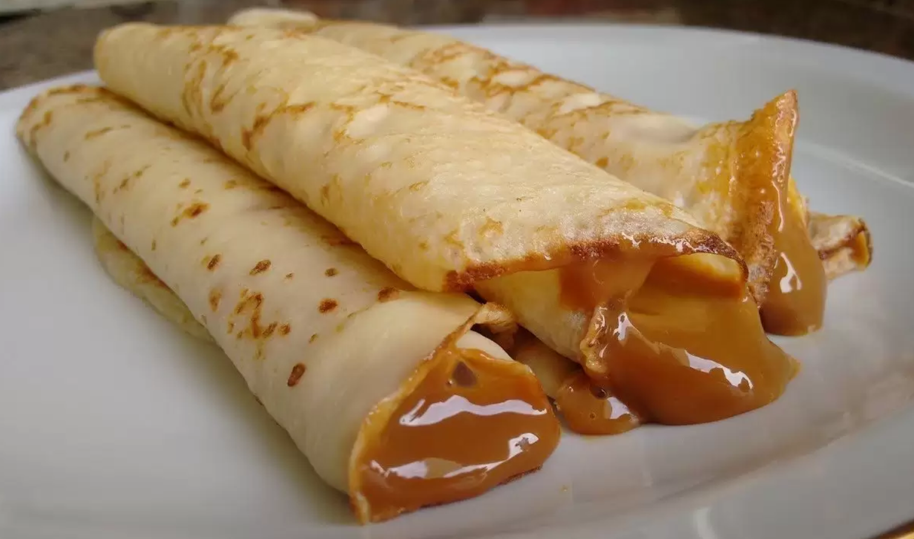

PANQUEQUES CON DULCE DE LECHE

Ingredientes:
- 125 gramos de harina harina de trigo
- 2 huevos
- 250 mililitros de leche
- 80 gramos de dulce de leche
- 2 cucharadas de manteca
Preparación:
- Batir los huevos con la harina y un chorrito de leche hasta que la masa líquida se vuelva homogénea.
- Agregar el resto de la leche.
- Batir hasta que queden bien incorporados los ingredientes y no queden grumos.
- Preparar la sartén, colocar un poco de la manteca en ella.
- Con un cucharón, colocar la masa en el sartén cuidando que la misma cubra bien el fondo, los bordes y el centro.
- Cuando los bordes empiecen a secarse y a aparecer burbujas, con una espátula darlo vuelta.
- Dorarlo del otro lado por menos de dos minutos.
- Sacarlo del sartén, dejarlo enfriar y untar el dulce de leche.
- Servir.